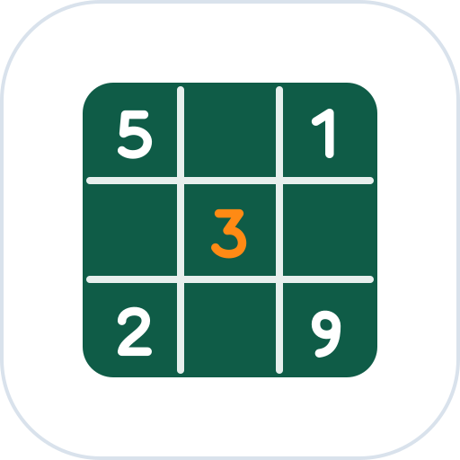

Sudoku
Zahlen von 1 bis 9 in jede Zeile, Spalte und jedes 3×3-Feld.
Schwierigkeit
0:00
So geht's
- In jede Zeile, jede Spalte und jedes 3×3-Feld kommen die Zahlen 1 bis 9 genau einmal.
- Feld antippen, dann Zahl wählen (oder auf der Tastatur tippen). Mit „Notizen“ merkst du dir mögliche Zahlen.
- Doppelte Zahlen werden rot. Jedes Rätsel hat genau eine Lösung.